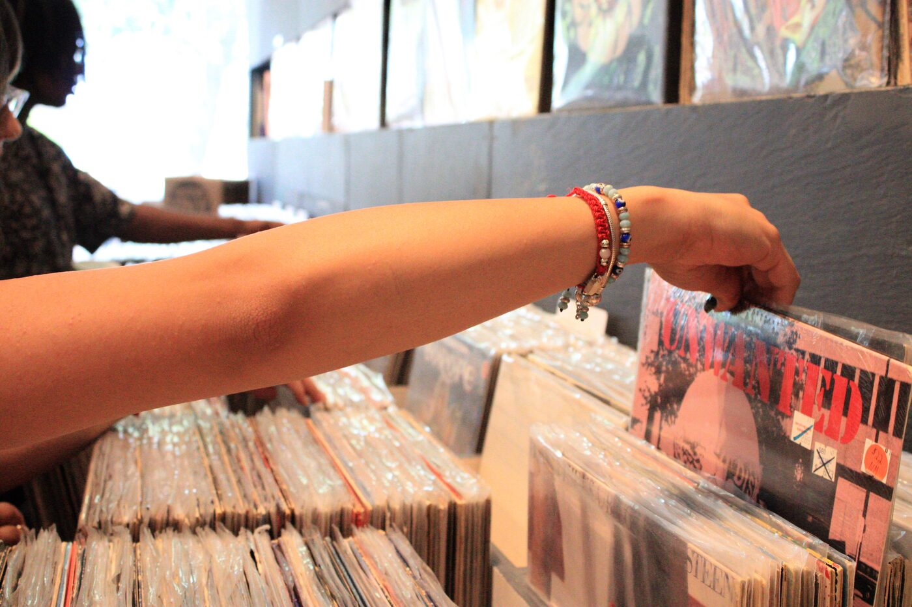

Pass The Aux Ongoing

Overview
Pass The Aux started from wanting a third space after the pandemic. It's a free monthly Sunday gathering, usually at a record store, where people share music and the stories behind why they connect to it.
Designing the format
It began as an open mic. I changed it to a guided circle discussion so introverts and people who come alone feel comfortable joining in.
Impact
- About 50 people per event (venue capacity), with RSVPs usually in the hundreds.
- First event in 2023 with Miyagi Records and Jon Basil. The recap video got 40,000 views on TikTok.
- Putting You On: my series putting people on to new music.
What's next
Going deeper into digital content, and collaborating with the City of Chicago and other organizers.
We have five “unicorn goals,” including a studio, a travel group, and a podcast or radio show. For the past three years we've been building MVPs of them to test the concepts, and each round brings us closer to the final versions. What's next is always the next iteration.